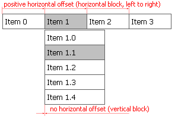

| CONTEXT HELP |
|---|
| Level Horizontal Offset |
|
 Horizontal distance between the menu items within the block. Parameter is specified in pixels. This parameter together with the vertical offset defines the layout of the menu level. When horizontal offset equals the width of the item and vertical offset is set to 0 then the level is aligned horizontally. When horizontal offset is set to 0 and vertical offset equals the height of the item then the level is aligned vertically. Negative offset will reverse the direction of the menu displaying the menu from right to left. Reducing the offset will make items overlap (good way to suppress double borders), increasing the offset will create gaps between the menu items in the block. This setting is shared among all menu items on the same level/depth. In Tigra Menu PRO the horizontal offset can be set for each item independently. By default the offset is inherited from the parent level |